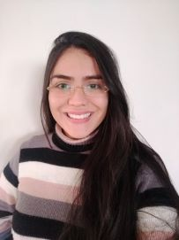

|  |
Pâmela Fernanda Trindade Murat
|
Bibliotecária em Transição para área de Tecnologia. Apaixonada por livros e Tecnologia.
Experiencia Profissional
-
Pontificia Universidade Catolica - PUC - Assistente de Biblioteca - 2012 à 2020
- Instituto Histórico e Geografico de Sorocaba - Estagiária - 2018/2019
-
Faculdade de Direito de Sorocaba - FADI - Assistente de Biblioteca - 2010 à 2011
- Colégio Ose Coc - Assistente de Biblioteca - 2009 à 2010
Formação
- Graduação em Biblioteconomia - Centro Universitário Claretiano - Conclusão 2020
- Técnico em Secretariado - Colégio Politécnico - Conclusão 2009
Cursos e Capacitações
- Algoritmo e Lógica de Programação do Absoluto ZERO!- UDEMY
- Agile Fundamentals: Including Scrum and Kanban - UDEMY
- Elaboração de Referências - Estilo Vancouver- UNESP
- Elaboração de Referências estilo ABNT 6023 -UNESP
- Pesquisa Bibliografica do Planejamento a execução - UFSCAR
Curso em andamento
- Agile Fundamentals: Including Scrum and Kanban - 2021 - UDEMY